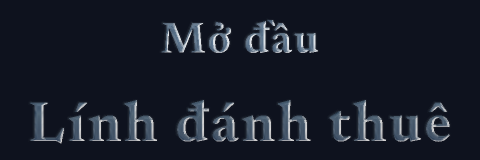
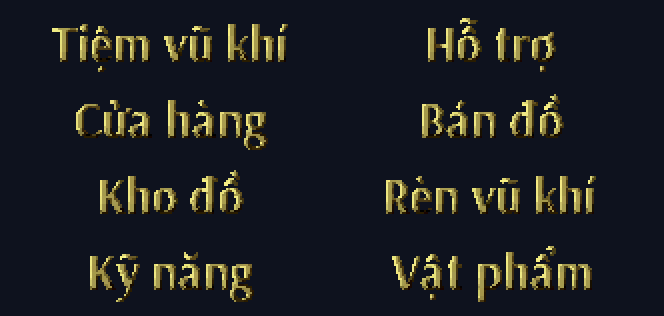
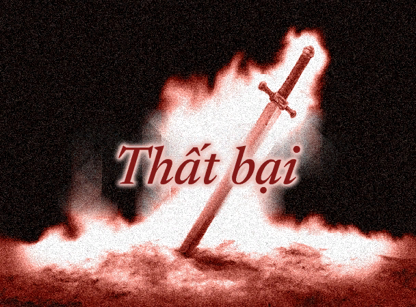
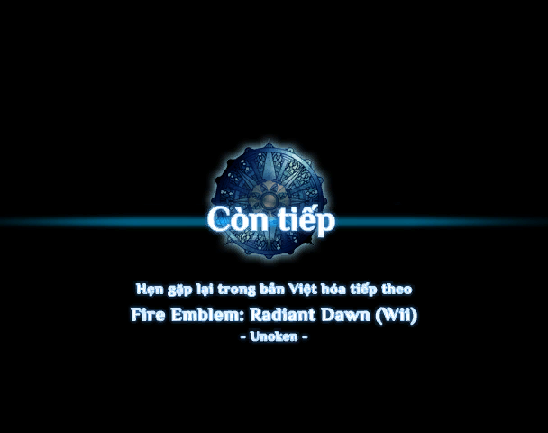

Giới thiệu
Fire Emblem: Path of Radiance (2005) là game chiến thuật theo lượt trên GameCube, kể về Ike, chàng lính đánh thuê trẻ bị cuốn vào cuộc chiến của cả lục địa Tellius. Dự án này chuyển toàn bộ game sang tiếng Việt: lời thoại, menu, và cả chữ vẽ sẵn trong ảnh.
- Font tiếng Việt đủ dấu, ghép từ chính nét chữ của game nên hòa vào giao diện gốc.
- Chữ trong ảnh được vẽ lại: tên chương, banner lượt, menu căn cứ, màn hình kết thúc.
- Phim cắt cảnh có phụ đề tiếng Việt: bản tiếng Anh gốc chỉ có lồng tiếng, không có phụ đề. Bản Việt hóa bật phụ đề lên, giữ nguyên lồng tiếng gốc.
- Xưng hô theo từng cặp nhân vật, giữ đúng giọng của từng người.
- Phát hành theo mốc: mỗi mốc một bản phát hành, không phải chờ dịch xong cả game.
Tiến độ
- v0.1Bản xem trước · Toàn bộ ảnh và giao diện, Mở đầu – Chương 2Đã phát hành
- v0.2Đến Chương 8 · Lời thoại Chương 3 – Chương 8, hướng dẫn chơi của Anna, phụ đề video, support mức CĐã phát hành
- v0.3Đến Chương 17 · Lời thoại Chương 9 – Chương 17Đang làm · 2/12
- v0.4Trọn cốt truyện · Lời thoại từ Chương 18 đến hết, đoạn kếtChưa bắt đầu
- v0.5Hội thoại hỗ trợ · 69 cặp supportChưa bắt đầu
- v1.0Bản hoàn chỉnh · Rà soát và chơi thử toàn bộChưa bắt đầu
Hình ảnh




Hướng dẫn patch
- Chuẩn bị ảnh đĩa bản châu Âu (PAL, mã GFEP01). Bản Mỹ và bản Nhật không dùng được.
- Đổi sang ISO nếu ảnh đĩa đang là .rvz, .gcz, .wia hoặc .ciso (vá trên trình duyệt nhận luôn .rvz, bỏ qua bước này): trong Dolphin, chuột phải vào game → Convert File… → Format: ISO → Convert. Ảnh NKit (.nkit.iso, .nkit.gcz) phải khôi phục bằng công cụ NKit trước, vì Dolphin không đưa NKit về đúng bản gốc được.
- Kiểm tra ảnh đĩa đúng bản gốc (bảng dưới). Cách nhanh nhất: Dolphin → chuột phải vào game → Properties → Verify → Verify Integrity.
- Patch trên trình duyệt, hoặc bằng một trong các công cụ bên dưới với file
.xdeltatrong gói tải về. - Đặt ngôn ngữ máy là tiếng Anh: Dolphin → Config → GameCube → System Language: English. Bản PAL chọn ngôn ngữ theo máy, và bản Việt hóa thay vào phần tiếng Anh.
- Mở file ISO đã patch bằng Dolphin.
ISO gốc cần có
| Kích thước | 1.459.978.240 byte |
| CRC32 | ad6508bd |
| MD5 | 0bf72c4840de405ee5ca1b8e3bff56aa |
| SHA-1 | fa37e09f5cc124602edabbf54f77162d0f3f31f0 |
Hash của ISO sau khi patch ghi trong file HUONG_DAN.txt đi kèm từng bản phát hành.
Kiểm tra hash bằng dòng lệnh
Windows (PowerShell):
Get-FileHash -Algorithm SHA1 "game.iso"
macOS:
shasum -a 1 game.iso
Linux:
sha1sum game.iso
Công cụ patch
Windows
Delta Patcher hoặc xdelta UI: chọn ISO gốc làm file nguồn (Original/Source), file .xdelta làm file patch (Patch), rồi bấm Apply. Delta Patcher ghi đè lên chính file ISO, nên hãy giữ một bản sao ISO gốc.
macOS / Linux
Dùng Delta Patcher (có giao diện), hoặc dòng lệnh xdelta3 (macOS: brew install xdelta; Linux: sudo apt install xdelta3):
xdelta3 -d -s "ISO gốc.iso" FE9-VietHoa-Unoken-v0.2.xdelta FE9-VietHoa-Unoken-v0.2.iso
Android
Dùng UniPatcher: chọn file patch .xdelta và file ISO gốc, rồi bấm patch. Sau đó mở bằng Dolphin cho Android.
Thay đổi
v0.2 — Đến Chương 8 và hướng dẫn chơi (17/10/2026)
Đã Việt hóa thêm
- Lời thoại Chương 3 đến Chương 8: trọn phần 1 của cốt truyện, đến khi Ike nhận làm Thủ lĩnh.
- Phụ đề tiếng Việt cho các đoạn phim cắt cảnh (bản tiếng Anh gốc không hiện phụ đề).
- Toàn bộ hướng dẫn chơi của Anna (380 mục) và dải "- Minh họa -" khi xem bài mẫu.
- Hội thoại hỗ trợ (support) mức C của 19 cặp nhân vật có mặt tới Chương 8 (Ike–Titania, Ike–Soren, Boyd–Mist, Rolf–Mist, Rhys–Titania…). Mức B và A sẽ có ở bản sau.
- Câu tử trận và câu rút lui khỏi bản đồ của các đơn vị chơi được tới Chương 8 (Ike, Titania, Boyd, Oscar, Rhys, Shinon, Gatrie, Soren, Rolf, Mia, Ilyana, Lethe, Mordecai).
- Lệnh giao/nhận người đang được cứu đổi thành Giao người / Nhận người (trước là "Chuyển đồ / Lấy đồ", sai nghĩa); bài hướng dẫn "Đơn vị cưỡi thú"; Partner units thống nhất là đồng minh.
Sửa lỗi
- Ảnh "MISS!" / "NO DAMAGE!" còn sót tiếng Anh khi đánh trượt: nay là TRƯỢT! / VÔ HẠI!.
- Khung thoại Chương 1–2: dòng đầu trang bị trống, trang quá 3 dòng làm chữ bị trôi.
- Khung điều kiện thắng trên bản đồ cắt cụt chữ ("Tiêu diệt địch" chỉ hiện "Tiêu di"): nới bề rộng ô.
- Trạng thái file lưu: "Clear" dịch nhầm thành "Xóa", nay là Xong; "Adv" (lưu ở màn hình chuẩn bị) nay là C.bị.
- Rà lại xưng hô và thuật ngữ từ Mở đầu đến Chương 8 (Ike với Titania, thoại chung của trùm không còn từ chỉ giới tính…).
Còn tiếng Anh
- Lời thoại từ Chương 9 trở đi, hội thoại hỗ trợ mức B/A (và mọi mức của các cặp có nhân vật gia nhập sau Chương 8), đoạn kết, câu tử trận của nhân vật gia nhập sau Chương 8, khoảng 20% menu và mô tả.
v0.1 — Bản xem trước (15/10/2026)
Đã Việt hóa
- Mở đầu, Chương 1, Chương 2: toàn bộ lời thoại.
- Toàn bộ chữ vẽ trong ảnh: tên chương, banner lượt (LƯỢT TA / LƯỢT ĐỊCH…), Lên cấp!, Thăng chức!, màn hình trước trận, căn cứ, thông tin đơn vị, menu hệ thống, lời bài hát kết thúc, Chiến tích, Thất bại, Còn tiếp.
- Khoảng 80% menu, vật phẩm, kỹ năng, class và phần trợ giúp.
- Font tiếng Việt đủ dấu, ghép từ nét chữ gốc của game.
Cách patch
- Patch ngay trên trình duyệt: chọn ảnh đĩa gốc dạng ISO hoặc RVZ, nhận ISO tiếng Việt; file không tải lên đâu cả.
- Hoặc dùng file patch
.xdeltavới công cụ patch quen thuộc (xemHUONG_DAN.txt). - Nhớ đặt ngôn ngữ máy (Dolphin: Config → GameCube → System Language) là English.
Còn tiếng Anh
- Lời thoại từ Chương 3 trở đi, hội thoại hỗ trợ, hướng dẫn chơi, phụ đề phim, đoạn kết.
Đã biết
- Một vài nhãn chỉ số dài hơn bản gốc nên chạm sát con số bên cạnh (ví dụ "Trúng" trong khung trợ giúp vũ khí).
Báo lỗi
Gặp chữ tràn khung, lỗi chính tả, dịch sai hay game bị treo? Hãy mở một issue trên GitHub, ghi rõ:
- phiên bản đang dùng (hiện trong phần mô tả game ở Dolphin),
- chương, cảnh, câu thoại hoặc màn hình bị lỗi,
- ảnh chụp màn hình nếu được; nếu game treo: thông báo lỗi của Dolphin, và đang làm gì lúc đó.
Thực hiện & cảm ơn
- Thực hiện: Unoken
- Dịch thuật, công cụ, font tiếng Việt, chữ trong ảnh, đóng gói, trình patch trên web.
- Trợ lý AI: Claude (Anthropic) và Gemini (Google)
- Bản Việt hóa được làm với sự hỗ trợ của AI trong dịch thuật, viết công cụ và rà soát. Mọi lựa chọn về câu chữ, xưng hô và thuật ngữ đều do Unoken quyết định và kiểm tra trong game.
- Cảm ơn: font chữ trong ảnh
- Newsreader, Arsenal, Philosopher, Grenze Gotisch, M PLUS 1p: dùng theo giấy phép SIL Open Font License 1.1. Font trong lời thoại ghép từ nét chữ gốc của game.
- Cảm ơn: công cụ
- Dolphin (trình giả lập, tài liệu định dạng RVZ), xdelta3 (định dạng patch VCDIFF), fzstd (giải nén zstd trong trình patch trên web, giấy phép MIT).
Điều khoản sử dụng
Bản Việt hóa phát hành miễn phí. Để dự án đi tiếp được và người chơi luôn nhận đúng bản, xin tôn trọng vài điều sau.
Bạn được
- Chia sẻ đường dẫn tới trang này, hoặc chia sẻ nguyên vẹn gói tải về (file
.xdelta,.zip), kèm ghi nguồn "Việt hóa: Unoken". - Quay video, livestream, chụp màn hình khi chơi bản Việt hóa. Ghi nguồn trong phần mô tả là quý lắm.
- Tự sửa bản Việt hóa để dùng riêng cho mình.
Xin đừng
- Chia sẻ file ISO đã patch: file đó chứa nguyên game gốc, phát tán là vi phạm bản quyền của Nintendo. Hãy chia sẻ bản patch thay cho ISO.
- Phát hành lại bản đã sửa đổi, hoặc gỡ, thay tên người thực hiện ở banner đĩa, màn hình mở đầu, danh sách nhân sự.
- Bán, thu phí, hay cài sẵn vào máy, thẻ nhớ, đĩa đem bán.
- Trích bản dịch, font tiếng Việt hay ảnh đã Việt hóa sang dự án khác (kể cả chuyển sang bản Mỹ, bản Nhật) khi chưa hỏi ý kiến.
Muốn dùng lại một phần cho dự án của mình, hay muốn góp sức? Hãy mở một issue trên GitHub để trao đổi.
Miễn trừ trách nhiệm
Đây là dự án phi lợi nhuận của người hâm mộ, không liên quan, không được tài trợ hay chấp thuận bởi Nintendo hay Intelligent Systems. Fire Emblem và mọi nhân vật, hình ảnh liên quan là tài sản của chủ sở hữu tương ứng. Dự án không phân phối game hay dữ liệu đĩa gốc; patch chỉ dùng được với bản game mà bạn sở hữu hợp pháp. Bạn tự chịu trách nhiệm khi sử dụng.
Trang đếm lượt truy cập ẩn danh bằng GoatCounter (không dùng cookie, không lưu địa chỉ IP) để biết có bao nhiêu người quan tâm tới dự án.